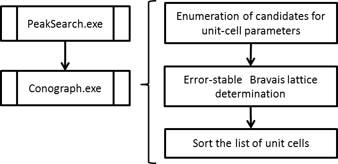
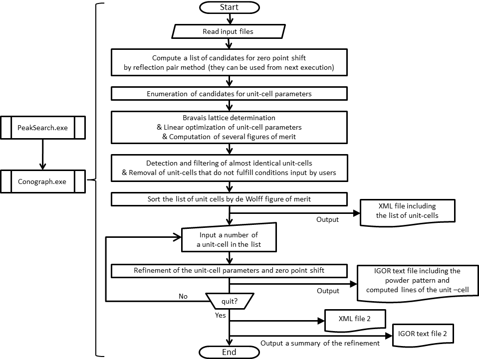

Instructions for Conograph CUI program
[English / Japanese]
Distribution of the Conograph GUI test version started at this website recently (4/26/2013).
Version 0.99 is the initial release of the core program of the Conograph software (download page in SourceForge.jp)
which executes powder auto-indexing by the method introduced in [2], [3] for the first time.

Figure 1: three main stages of powder auto-indexing
|
Conograph executes extensive powder auto-indexing searches in comparatively short time frames for powder diffraction patterns including ones from spallation neutrons.
After the peak search is finished, the powder auto-indexing is completed by carrying out the three main stages that are shown in Figure 1.
An error-stable Bravais lattice determination is necessary, because Conograph uses an enumeration algorithm that commonly works
for any Bravais lattice, space group and type of systematic absences, and observational errors in peak positions
are propagated to the unit-cell parameters that are obtained.
When the regular search option is selected, Conograph completes all of the procedures in about 10 minutes using the default parameters prepared for Conograph.
In the quick search option, the time will not be more than 5 minutes.
(The times were obtained using an Intel® Core™ i7 Processor (3.2 GHz, 8 threads).
If a less powerful processor is used, then the search options will take more time.)
If you have not used Conograph before, then it is best to choose the regular search option,
because this allows you to use the default searching parameters
without changes even in difficult cases.
The Quick quick search option without modifications to the parameters also works well if the unit-cell has a small volume or high symmetry.
The differences between the two searches is explained here.
NEWS
- 2016/9/7
-
- The output format for base-centered monoclinic cells was corrected.
FAQ
- Starting Conograph
- The Conograph program requires the following three input files.
(Examples can be found in the sample folder.)
- A *.inp.xml file that includes information about the input parameters (Example)
- A cntl.inp.xml that includes the names of the *.inp.xml file and the output file (Example)
- An IGOR text file that includes a powder diffraction pattern (X and Y coordinates and the error in Y) and the following information about peaks (Example. This file is outputted from the peak search program distributed separately)
- peak-positions (2θ, time-of-flight, d)
- peak-heights (used only for display)
- full-widths-at-half-maximum (used to estimate errors of the peak-positions)
- 0/1 flags for the respective peaks for powder auto-indexing and computation of figures of merit
- Copy one of the folders from the sample folder.
Modify the contents of the two xml-files, the name of *.inp.xml file, and
the 0/1 flags in the IGOR text file if necessary.
If you change the name of the *.inp.xml file, then it will be necessary to modify the contents of the cntl.inp.xml file accordingly.
- Open a command prompt or terminal window in your operating system.
Change the current folder to the folder that contains the modified cntl.inp.xml file.
- Enter the absolute path to the Conograph.exe file on the command line and execute Conograph.
- The CUI outputs an XML file containing a list of candidate unit-cells (Example of a hexagonal case)
and awaits input from the user.
At the top of the XML output file, unit-cells with the best value for the figures of merit are presented for each Bravais type.
Just below the unit-cells, the unit-cell with the best value for the de Wolff figure of merit [4] from all of the obtained unit cells is presented.
- Refinement of the unit-cell parameters and the zero-point shift after the execution of a powder auto-indexing search
- A number like 0403003 is associated with every unit-cell in the XML output file.
If the user enters one of the numbers on the command line,
the the unit-cell parameters and zero-point shift parameter are refined
and the program outputs an IGOR text file (Example) that includes the following information:
- a copy of the contents in the input IGOR text file
- positions of computed lines of the input unit-cell parameters
- the parameters and the Bravais lattice of the unit-cell
Until you terminate Conograph by entering quit,
you can enter the number associated with any of the unit cells in the XML file as many times as you want.
Before termination, Conograph outputs the following:
- an XML file including information about refined unit-cell parameters and zero-point shifts (Example)
- an IGOR text file unifying the IGOR text files output during refinement (Example)
If you have not used Conograph before,
then our advice in peak search is to pick up all the diffraction peaks as uniformly as possible on the basis of their peak-heights.
(Such results will be obtained easily
by using the peak search program equipped with Conograph.)
The enumeration algorithm of Conograph then determines in a comparatively short time
which combinations of peaks provide better solutions.
Unless you have any prior information about diffraction peaks,
it is better to avoid reducing the quality of input information
by selecting peaks or removing overlapped peaks artificiality.
As long as the IGOR Pro software is available,
powder auto-indexing in the CUI is not difficult.
The following are the chief advantages of the GUI.
-
A peak search program is incorporated in the GUI.
-
At the start-up of the GUI program,
recommended values are automatically entered in the text boxes for the input parameters.
-
Visual comparison between the powder diffraction pattern and the computed lines of the unit-cells
is easier in the GUI.
-
In the CUI, solutions are sorted by the de Wolff figure of merit.
In the GUI, the other sorting criteria can be chosen anytime after the enumeration stage.
-
The CUI executes the various functions as successive procedures.
In the GUI, the computational time required for repeated execution may be shorter,
because the various functions are available separately and independently.
These functions include:
- estimation of the zero-point shift Δ2θ by the reflection pair method [1]
(The CUI program outputs several candidate values on the command line in the initial stage of powder auto-indexing.)
- estimation of n required for computation of the de Wolff figure of merit Mn
(Some unit cells require n > 20 owing to existence of a dominant zone.)
In order to use one of the above estimated values,
it is necessary to terminate the CUI program once.
Regarding a.,
this limitation of the CUI program is partly because
use of Δ2θ = 0 is sufficient for many cases.
(For example, Conograph has obtained successful results even in the case where the correct Δ2θ is 0.195°.)
Figure 2 is a flowchart of the CUI:

Figure 2: flowchart of CUI.
(Click on the image to enlarge it.)
You should send us a bug report with
all of the input and output files attached (including LOG_CONOGRAPH.txt) to the following e-mail address:
- conograph-bugs (at) ml.post.kek.jp
If you use Conograph in your research then we strongly encourage you to include a citation of the following article in the bibliography.
(Fullpapers about algorithms and results from Conograph are currently under revision as of 02/24/2013.)
- R. Oishi, M. Yonemura, T. Ishigaki, A. Hoshikawa, K. Mori, T. Morishima, S. Torii, T. Kamiyama,
New approach to indexing method of powder diffraction patterns using topographs,
Zeitschrift für Kristallographie Supplements 30, pp.15--20.
The versions of the source code are distributed as open source under the MIT license on the repository list of the Conograph project.
I would like to express my gratitude to those who offered powder diffraction patterns for the Conograph project.
C. Dong, F. Wu, H. Chen,
Correction of zero shift in powder diffraction patterns using the reflection-pair method, J. Appl. Cryst., 32, pp. 850-853 (1999).
R. Oishi-Tomiyasu,
Distribution rules of crystallographic systematic absences on the Conway topograph and their application to powder auto-indexing, preprint.
R. Oishi-Tomiyasu,
Rapid Bravais-lattice determination algorithm for lattice constants containing large observation errors, Acta Cryst. A, 68, pp. 525-535 (2012).
P. M. de Wolff,
A simplified criterion for the reliability of a powder pattern indexing, J. Appl. Cryst., 1, pp. 108-113 (1968).
［Back to top]